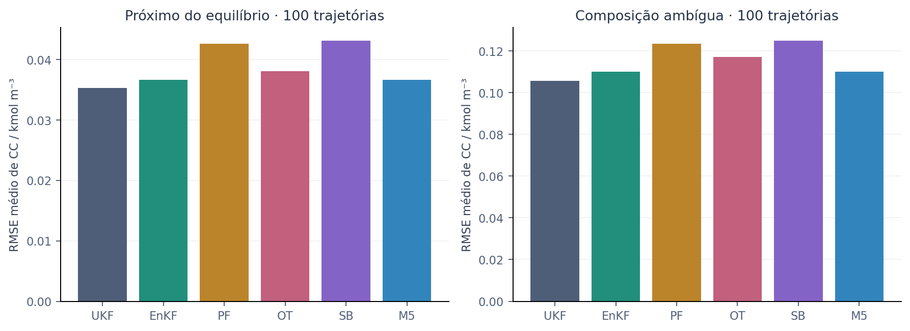
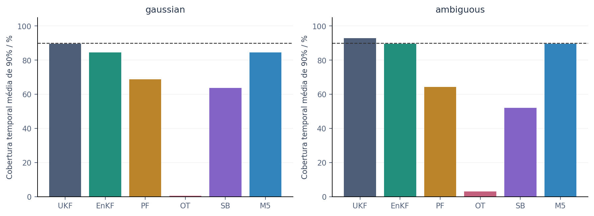
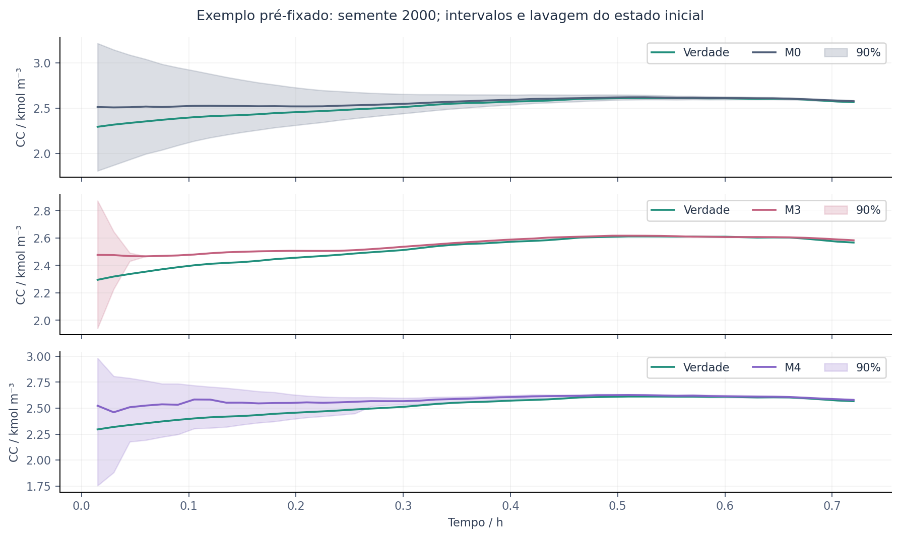
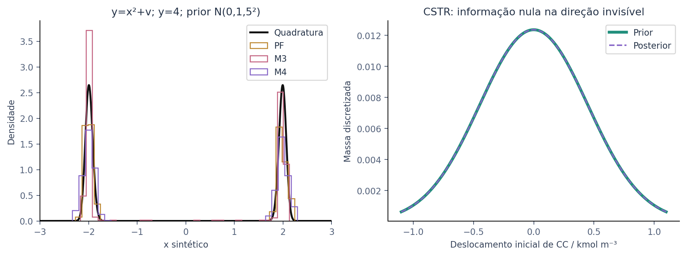
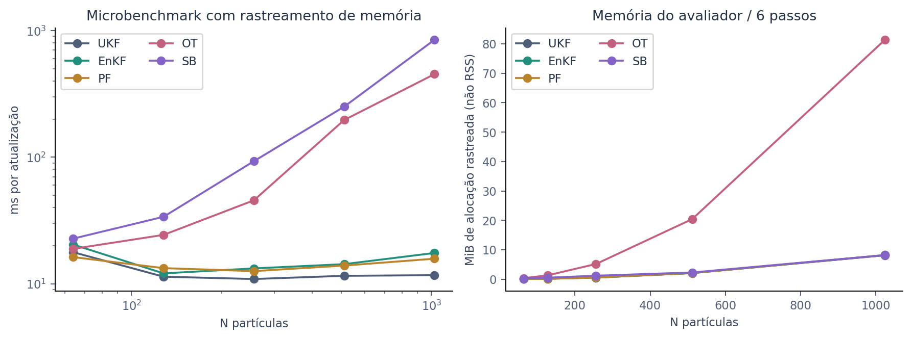
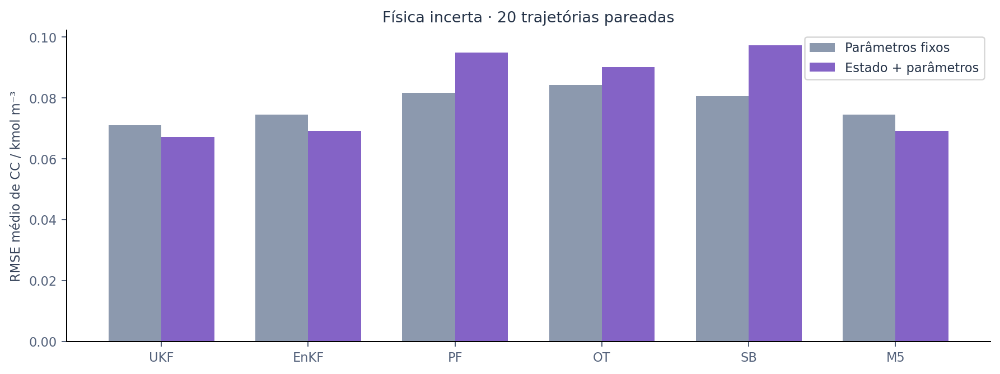
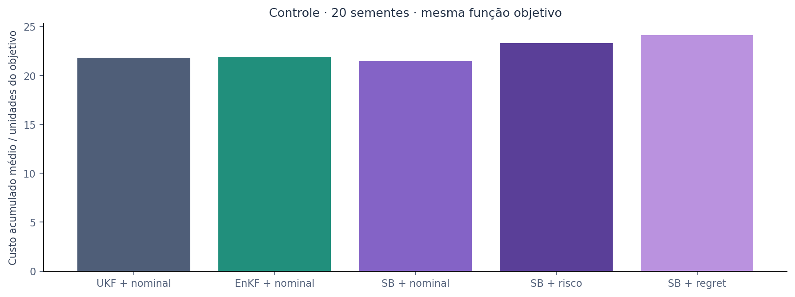

17 de outubro de 2026. Pesquisa computacional para Walter Yanko / YCS.
**Resultado D na comparação principal:** não se confirmou vantagem de estimação ou de qualidade probabilística do M4 sobre o UKF. O RMSE de CC aumentou 22.3% no universo gaussiano e 18.2% no universo de composição ambígua. Os IC pareados dessas diferenças ficaram acima de zero. A hipótese de ganho permanece possível em outros regimes, mas não foi sustentada aqui.
O código matemático consegue representar dois modos no ensaio sintético y=x²+v. Isso não estabelece vantagem sobre o PF, nem multimodalidade real no CSTR. A busca CSTR com prior contínua encontrou uma marginal unimodal e uma direção sem informação térmica; não plantou duas populações iniciais artificiais.
- Planta TABLED, Δt=54 s; 48 passos/0,72 h nos dois cenários principais. - 100 sementes 2000-2099 em cada cenário; mesma planta e ruído para todos os filtros. - N=128; ε=0,02; difusão 64 passos, kernel h=0,05, malha quadrática. - Desenvolvimento separado: 1000-1005, três cenários, 24 passos; seleção por CRPS. - M5 permanece gaussiano: IC por clusters de sementes não justificou o gatilho. - Ruído: 12 sementes por condição, 32 passos; física: 20 sementes, 32 passos. - Controle: 20 sementes 3000-3019, 32 passos; candidatos e função objetivo comuns. - Intervalos de confiança: bootstrap de 2000 reamostragens de trajetórias pareadas; não se trataram instantes correlacionados como trajetórias independentes. - A escolha de 100 foi mantida na campanha principal. Ruído/controle/parametrização são estudos exploratórios menores, sem poder estatístico equivalente.
Foram concluídas 2016 execuções de filtros de avaliação, totalizando 83712 atualizações, e 100 malhas fechadas. Repetir os mesmos dados com outra verossimilhança ou parametrização não cria uma trajetória independente nova. O total de plantas/medições por condição de estimação é 280; as comparações informada/ingênua e fixa/conjunta são pareadas.
RMSE/CRPS em kmol/m³; cobertura em %; latência em ms por atualização.
| Método | RMSE CC | CRPS CC | Cobertura 90% | Latência |
|---|---|---|---|---|
| M0 | 0.03527 | 0.01648 | 89.6 | 2.05 |
| M1 | 0.03666 | 0.01724 | 84.5 | 3.08 |
| M2 | 0.04262 | 0.02181 | 68.8 | 2.86 |
| M3 | 0.03809 | 0.02505 | 0.5 | 6.31 |
| M4 | 0.04313 | 0.02183 | 63.6 | 19.65 |
| M5 | 0.03666 | 0.01724 | 84.5 | 3.06 |
| Método | RMSE CC | CRPS CC | Cobertura 90% | Latência |
|---|---|---|---|---|
| M0 | 0.10569 | 0.04903 | 92.8 | 2.81 |
| M1 | 0.11 | 0.05027 | 89.6 | 5.62 |
| M2 | 0.12342 | 0.06165 | 64.3 | 3.64 |
| M3 | 0.11715 | 0.0713 | 3.1 | 7.91 |
| M4 | 0.12489 | 0.06155 | 52.0 | 20.67 |
| M5 | 0.11 | 0.05027 | 89.6 | 3.5 |
Valores negativos favorecem a alternativa.
| Cenário | Método | Δ RMSE CC | IC95% inferior | IC95% superior | Vitórias | Derrotas |
|---|---|---|---|---|---|---|
| ambiguous | M0 | 0.0 | 0.0 | 0.0 | 0 | 0 |
| ambiguous | M1 | 0.00431 | -0.00012 | 0.00885 | 43 | 57 |
| ambiguous | M2 | 0.01774 | 0.00734 | 0.02823 | 36 | 64 |
| ambiguous | M3 | 0.01146 | 0.00227 | 0.02072 | 40 | 60 |
| ambiguous | M4 | 0.0192 | 0.00957 | 0.02929 | 32 | 68 |
| ambiguous | M5 | 0.00431 | -0.00012 | 0.00868 | 43 | 57 |
| gaussian | M0 | 0.0 | 0.0 | 0.0 | 0 | 0 |
| gaussian | M1 | 0.00138 | 0.00028 | 0.00244 | 45 | 55 |
| gaussian | M2 | 0.00735 | 0.00415 | 0.011 | 33 | 67 |
| gaussian | M3 | 0.00281 | 0.00025 | 0.00544 | 38 | 62 |
| gaussian | M4 | 0.00786 | 0.00423 | 0.01164 | 36 | 64 |
| gaussian | M5 | 0.00138 | 0.00029 | 0.00245 | 45 | 55 |
M3 perde variância repetidamente na transformação baricêntrica. Seus intervalos de 90% tornam-se severamente estreitos. M4 e PF também subcobrem; 128 partículas não sustentam a distribuição inicial inteira ao longo das atualizações. Não foi aplicada inflação oculta para melhorar os resultados.
O posto local calculado é 3/6 no equilíbrio parado e 4/6 sob excitação. Duas direções químicas são estruturalmente invisíveis. A maior diferença de temperatura entre estados ao longo do perfil nulo foi 0 K. A mesma estrutura foi descrita no acervo RSI e aqui confirmada, não reivindicada como descoberta inédita. O erro inicial decai por lavagem; isso não significa que a concentração inicial tenha sido identificada pelos sensores.
A posterior de referência CSTR é uma quadratura de 49×81 hipóteses sobre CA e a direção invisível de CC, oito observações e transição determinística. Ela é um ensaio auxiliar de identificabilidade, não a posterior exata da campanha estocástica de seis estados. O teste escalar usa 24001 pontos.
| Ruído | Método | RMSE ingênuo | RMSE informado | Variação % |
|---|---|---|---|---|
| correlated | M0 | 0.0459 | 0.04578 | -0.27 |
| correlated | M1 | 0.05009 | 0.05091 | 1.62 |
| correlated | M2 | 0.04128 | 0.04163 | 0.85 |
| correlated | M3 | 0.04282 | 0.04107 | -4.09 |
| correlated | M4 | 0.0443 | 0.03834 | -13.45 |
| outliers | M0 | 0.04506 | 0.04516 | 0.23 |
| outliers | M1 | 0.0482 | 0.04906 | 1.8 |
| outliers | M2 | 0.05132 | 0.05039 | -1.81 |
| outliers | M3 | 0.04498 | 0.04611 | 2.51 |
| outliers | M4 | 0.04725 | 0.0467 | -1.14 |
| student | M0 | 0.04558 | 0.0456 | 0.05 |
| student | M1 | 0.05202 | 0.04978 | -4.29 |
| student | M2 | 0.05094 | 0.04374 | -14.13 |
| student | M3 | 0.05181 | 0.05214 | 0.62 |
| student | M4 | 0.05632 | 0.0498 | -11.58 |
M2/M3/M4 compartilham exatamente a mesma verossimilhança em cada condição. M0/M1 recebem a família correspondente, mas empregam uma aproximação robusta gaussiana. Assim, diferenças contra M0/M1 misturam o tipo de aproximação e a forma da posterior; a comparação M4-PF isola melhor o efeito do gerador. O ruído correlacionado é entre sensores no mesmo instante. Ruído temporalmente correlacionado não foi avaliado. O viés constante desconhecido não foi aumentado no estado e permanece uma condição de modelo incorreto para todos.
Parâmetros: UA, multiplicador cinético, alimentação FA e calor de reação. As plantas recebem amostras privadas; filtros só conhecem a prior. M0/M1 estimam o estado aumentado. M2-M4 representam os parâmetros por partículas.
Fixos:
| Método | RMSE CC | CRPS CC | Cobertura 90% | Latência |
|---|---|---|---|---|
| M0 | 0.07108 | 0.0513 | 48.9 | 2.12 |
| M1 | 0.07452 | 0.05434 | 44.7 | 3.57 |
| M2 | 0.08159 | 0.06957 | 23.6 | 3.88 |
| M3 | 0.08422 | 0.07884 | 1.1 | 8.97 |
| M4 | 0.08065 | 0.06827 | 20.0 | 28.65 |
| M5 | 0.07452 | 0.05434 | 44.7 | 3.53 |
Conjuntos:
| Método | RMSE CC | CRPS CC | Cobertura 90% | Latência |
|---|---|---|---|---|
| M0 | 0.06719 | 0.0424 | 77.5 | 2.24 |
| M1 | 0.06914 | 0.0441 | 75.9 | 4.01 |
| M2 | 0.09499 | 0.07986 | 13.0 | 3.91 |
| M3 | 0.09004 | 0.07823 | 8.4 | 195.86 |
| M4 | 0.09731 | 0.08097 | 23.4 | 22.2 |
| M5 | 0.06914 | 0.0441 | 75.9 | 3.19 |
A estimação conjunta melhora ou piora conforme o método e amplia a dimensão. Esses resultados não demonstram identificabilidade individual de todos os parâmetros. E e k0 não foram separados; um multiplicador cinético foi usado. O Jacobiano conjunto das seis condições iniciais e quatro parâmetros, em coordenadas normalizadas e 32 passos no equilíbrio, tem posto local 5/10 ao limiar relativo 10⁻⁷. Seus valores singulares estão em observability.json. Esse diagnóstico local confirma confundimento; não prova identificabilidade global mesmo para as direções de sensibilidade não nula.
| Combinação | Custo médio | RMSE CC | Pico K | Violações médias | Fallbacks médios |
|---|---|---|---|---|---|
| M0_nominal | 21.802 | 0.18257 | 340.643 | 0.0 | 0.0 |
| M1_nominal | 21.922 | 0.17595 | 340.644 | 0.0 | 0.0 |
| M4_nominal | 21.439 | 0.18439 | 340.642 | 0.0 | 0.0 |
| M4_risk | 23.336 | 0.18579 | 340.735 | 0.0 | 0.1 |
| M4_regret | 24.132 | 0.18512 | 340.802 | 0.0 | 0.05 |
Os ICs de diferenças de custo estão em `results/control/control.json`, tanto contra UKF nominal quanto contra M4 nominal. O segundo contraste separa a mudança no controlador da mudança no estimador. O controlador reutiliza o conjunto finito do Multiverse v0.1: 64 sequências, horizonte 9, 9 cenários de quantis de CC. A regra de fallback foi auditada e testada. Não equivale ao NMPC histórico de horizonte 57/fmincon, nem a otimização global contínua.
O microbenchmark executou N=64,128,256,512,1024. A alocação rastreada máxima foi 81.37 MiB; não é medida de RSS nem garantia de consumo total do aplicativo. A pior atualização P99 desse ensaio foi 1216.40 ms, abaixo de 54000 ms. O microbenchmark inclui instrumentação de memória e somente seis atualizações por tamanho. P99 tão curto é descritivo, não uma garantia de tempo real. As latências da campanha incluem variações de carga do ambiente compartilhado. Não se mediu o notebook Windows do usuário.
Execuções de filtro interrompidas: 0. Fallbacks: 76. Candidatos rejeitados por domínio: 0. O primeiro ensaio sintético OT foi interrompido por não convergir com ε=0,01/4000 iterações; o registro foi preservado. A execução revisada explicita ε=0,05 e fallback, sem aceitar marginais erradas. A campanha principal mantém seu ε pré-selecionado.
A auditoria final encontrou três registros ausentes no JSONL principal, embora o CSV original tivesse as 1200 linhas e todos os traços NPZ estivessem presentes. Um registro foi recuperado do JSON de demonstração original; dois foram recalculados e confrontados com os traços originais a tolerância 10⁻¹² e com as métricas CSV. As latências originais foram preservadas do CSV. A causa da omissão não foi determinada. O JSONL anterior comprimido e o procedimento estão em `results/main/integrity/`; `scripts/audit_results.py` confirma agora a integridade das 2016 avaliações, sem duplicatas ou trajetórias ausentes.
O resíduo máximo da reconstrução do passo após subtrair o ruído de processo, em duas trajetórias pré-fixadas, foi 2.84e-14. Resíduos estequiométricos determinísticos, equilíbrio, positividade e integração independente são verificados nos testes. A regularização de covariância limita autovalores a 10⁻¹²; não é uma garantia de calibração.
34 testes Python passaram, incluindo física, probabilidades, causalidade, paridade TypeScript, convergência OT, drift publicado, multimodalidade sintética, controle/fallback e exportação. QA no Chromium verificou os sete painéis, projeção 3D, troca de eixos, seleção temporal, exportação JSON e nova execução real no servidor com semente 4242. Não houve erros de console ou overflow horizontal em 390 px. Essa validação ocorreu em Linux; os scripts Windows não foram executados em Windows.
Questões publicáveis: (1) como a não observabilidade estrutural limita filtros generativos; (2) como separar perda de diversidade, viés baricêntrico e viés de discretização; (3) se uma medida química adicional torna o custo distributivo justificável; (4) quanto uma proposta condicionada à observação melhora M4 frente a PF bem ajustado. Uma publicação exigiria revisão bibliográfica mais ampla, mais plantas/regimes, referências posteriores de alta precisão, ablações de regularização de segunda ordem e dados experimentais ou industriais.
Não foram demonstrados Resultado A (ganho principal), Resultado B (superioridade multimodal no CSTR) ou uma vantagem universal de controle. O relatório publica os contrastes de controle sem selecionar apenas trajetórias favoráveis.
Referências e derivação: MATHEMATICAL_REPORT.md. Proveniência, equações e unidades: PHYSICAL_AUDIT.md. Todos os números acima são lidos dos arquivos de resultados por este gerador.






